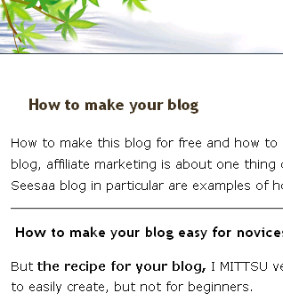

ブログの独自ドメイン名の作り方
無料ブログを独自ドメイン化する場合、ドメイン名とかどんなのつけようって考える場合もあるかと思います。
そんなとき、グーグルで自分のブログを翻訳してみるとキーワード候補が見つかるかもしれません。例えば、当ブログを翻訳してみるとこんな感じになります。

グーグル検索窓の右側に、「言語ツール」という欄がありますが、そのページでキーワードを入力して検索するか、もしくは「ウェブページを翻訳する」に自分のブログのＵＲＬを入力すれば翻訳結果が出てくると思います。
このブログを英語翻訳してみると、「 How to make your blog 」という感じのタイトルになるようです。
現在は、tukuruzo っていうサブドメイン名がついていますが、どちらかというと、サブドメイン名も how-to-make-blog みたいな感じの方がいいのかもしれません。
この際の横線にも、下線（アンダーハイフン）の _ ではなく、真ん中棒線のハイフン - を使うといいみたいっぽいんです。
なので、独自ドメイン化する場合は、自分のブログを翻訳してみてタイトルに関連がありそうなニュアンスのドメイン名にするといいような気がします。
また、日本語サイトの場合、入力キーワードをそのまま使っても効果的のようです。当サイトでいうと buroguno-tukurikata とか、そんな感じでしょうか。
カテゴリーごとにフォルダ分けをする際にも、そのフォルダに関連するようなキーワードが含まっていたら、若干ＳＥＯ的にもいいかもって気がします。
関連記事
- シーサーブログで独自ドメイン化
独自ドメインを取得したあとはレンタルサーバーを借りて、そのあとＭＴブログというパターンが多いのではないかなと思います。無料ブログを独自ドメイン化するのと、レンタルサーバーでのＭＴブログはどちらがどう違... - 独自ドメインの日本語アドレスおしりまで
インターネット上の住所にあたるドメイン名は、現在のところ、日本語ドメインなどのローマ字以外の文字を使用したアドレスの場合も末尾には「.com」など英語を使わなければならないようです。 実際、日本語独... - ムームーDNSのカスタム設定(シーサーブログ)
ムームードメインでいくつか独自ドメインを取得しているんですけど、DNS設定というのが難しく、特にシーサーブログで独自ドメイン化しようとしてもうまくいかない場合が多いです。シーサーブログで独自ドメイン化... - ブログの独自ドメイン取得と商標権
ブログを独自ドメイン化する場合、ドメインの取得は早い者順になっているので、短くて関連性のあるキーワードが含まれるドメインが空いているようなら、とりあえずでも取得しておくのがぶなんかと思います。けれども...